Civl 122 - Graphics and Computing - Week 5
Last update:
February 3, 2010 10:18 AM
Graphing in Excel
Today
- Another calculation example
- Formatting Conventions
- Choosing graph type
- Creating Graphs
Open this file.
Another Calculation Example
an accerating car
Formatting Conventions for Graphs
- All graphs should have the title of the graph at the top
- X and y axes should be labeled with a description of the variable with the units after in brackets
- Graphs with more than one set of variables should include a legend
- Graphs should be readable when printed in black and white; they should not rely on colour to tell the lines apart
Choosing the Correct Graph Type for Your Data
The type of graph you choose depends on the nature of the data. We will cover 4 types of graphs: pie, bar, line and x-y.
Creating Graphs In Excel 2007
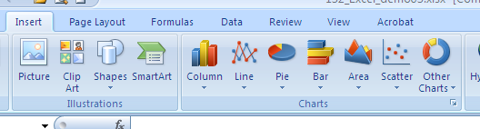
Pie, Bar or Line Graphs
These graphs use only 1 column of data (effectively the y-value). If you wish to add in the % for a pie or the city for the bar then these are treated as data labels (as opposed to data values).
We are going to recreate each of the graphs in the Excel file. We will start with the pie graph
Pie
- Go to the Insert tab.
- Select the values - in this case it will be a horizontal range of % values, but not the 100% total.
- Click the Pie button on the ribbon.
- choose the first pie type - it is the plainest.
- The graph will appear in your table and now we will add the other features we want.
- Click the pie graph once so that the little circular grips for every wedge of the pie are shown. Note that how the graphing menus behaviour will depend on what you click - this is somewhat irritating. It should look like this:
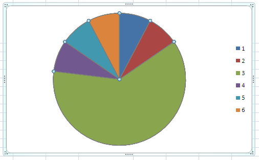
- Right click and choose 'Add data labels' from the pop-up menu. The percentages should now appear in each wedge.
- Next change the legend from being 1,2,3,4,5,6, to naming each type of drink. Right-click the graph and select 'Select Data' from the pop-up menu.
- Click the Edit button under 'Horizontal (Category) Axis Labels.'
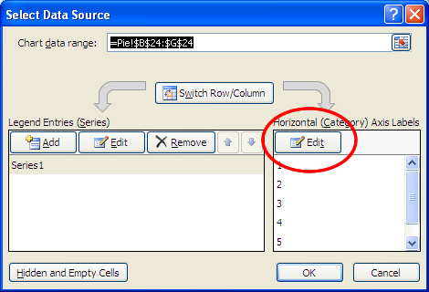
- Select the range from Red Wine to Other and click OK.
- Alternately, you may not want a legend but to have the category labels appear in the wedges of the pie. Right-click one of the percentages in the pie and select 'Format Data Labels' from the pop-up menu.
- Check the box to show 'Category Name'. Experiment with the other settings in this menu.

- Add a title to the graph.
- Select the perimeter of the graph. Note that, with a graph selected, 3 more tabs appear in the ribbon: Design, Layout and Format. All of the tools we have been accessing by right-clicking are also on these tabs.
- Choose the 'Layout' tab
- Click the button for 'Chart Title' and choose 'Above Chart'
- A generic title appears above your pie. Click this title to edit it.
- It is often advantageous for the chart to take its title from a cell in the table. Right-click the graph and choose 'Select Data'.
- Click the Edit button as shown below
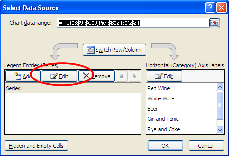
- Another window appears. One box indicates the data range and another is a pointer to the chart title. Click on the cell containing the chart title and its cell address will appear in the Edit Series window.
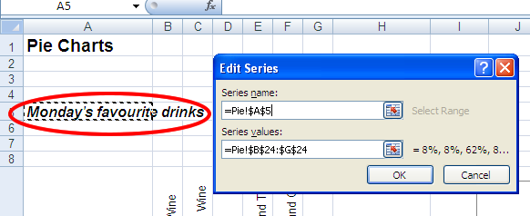
- Click OK twice.
- We are done with Pies but many of the tools are very similar with Bar and Line graphs.
Bar
- Go to the worksheet called Bar
- Select the values from $425,000 to $155,000
- Click the Column button on the ribbon.
- choose the first pie type - it is the plainest.
- The graph will appear in your table. It will automatically have the $ values formatted to be $ - by default, Excel copies the formatting of the original data.
- Excel puts a legend on every graph. In this case the name of the series is not identified so Excel labels it 'Series 1'. A legend is not needed on a graph with only 1 data set. Click the legend and hit the Delete key.
- Adding City Labels
- Right-click the graph and select 'Select Data' from the pop-up menu.
- Click the Edit button under 'Horizontal (Category) Axis Labels.'
- Select the range from Victoria to Fredericton and click OK.
- To add a title, right-click the graph and choose 'Select Data' one more time.
- Click the Edit button as shown below
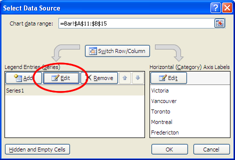
- Another window appears. One box indicates the data range and another is a pointer to the chart title. Click on the cell containing the chart title and its cell address will appear in the Edit Series window.
- Click OK twice
- Now we are going to optionally reformat the Y-values (the house prices) so the prices read $100, $200 etc instead of $100,000; $200,000 and the y-axis label will say 'Cost (thousands)
- Add a y-axis title: select the graph and go to the Layout tab.
- Click the 'Axis Title' button
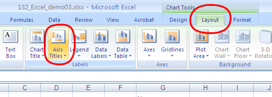
- Choose Primary Vertical Axis + Rotated Title
- Now double-click the title and change it to say 'Cost ($1000s)'
- Right-click any of the y-axis values in the graph and choose 'Format axis' from the pop-up menu.
- Choose Thousands for the 'Display unit'. If 'Show display units label on chart' is checked, remove the check.
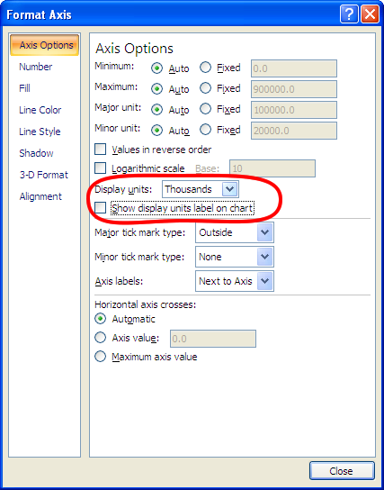
- This menu allows you to change many formatting and display features of the x- or y-axis values. You can change the number format ($, %, # decimals) the max and min values to display and the font and colour of the text. You can also make the axis a log scale or have the values start with 0 at the top instead of the bottom.
Line (Optional)
- Take the skills you have learned with the Pie and Bar graphs and recreate the line graph.
- Remember that we don't generally ever want to create Line graphs so we will skip this if we are running behind.
X-Y Graphs
X-Y Graphs are the most common type of graph you will make. They are also the easiest. however, they do have more options.
It is generally best to have the data you want to graph in vertical columns with the first column as the x and the second column as the y. If there are several y columns to graph they can follow after the first y.
- Go to the 'X-Y houses' tab
- Select the range that includes all of the years as well as the cost data (A9 to B39)
- On the Insert tab click 'Scatter'
'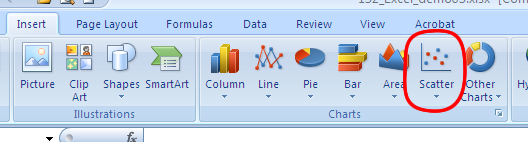
- There are 5 choices presented. I always choose the 4th one (Scatter with straight lines and markers) and change it later if I decide I don't like it.
- Delete the legend
- Add a Title
- Add the axes titles as they appear in the sample graph.
The data on the 'Stress-Strain' tab is similar to that required in your Strengths class.
- Select the data in the range D11:E22
- On the Insert tab click 'Scatter' and select the option that includes markers only
- Format the axes so they include appropriate titles and the numbers do not show unnecessary decimal places.
- Now we want to have Excel fit a straight line to the data:
- Single click one of the data points and all the points should show as being selected like this:
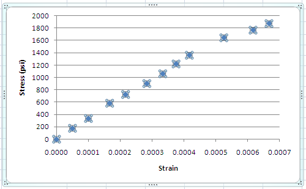
- Right click and choose Add Trendline from the pop-up menu
- Choose 'Linear' (should be the default) and near the bottom, 'Set Intercept = 0'
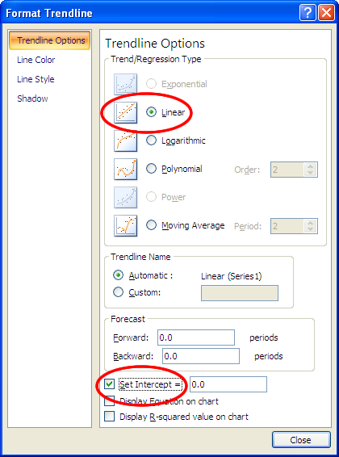
- The line gives the wrong answer. We want to fit a line to only the straight portion of the data. This requires another series.
- Delete that Trendline
- Put your mouse over the last point on the graph in the straight portion of the data. A tool tip will show the x and y values for that data point. Note that it has a y-value of 1361.7
- Right-click the graph and choose 'Select Data'
- Select Series 1 and click 'Edit.'
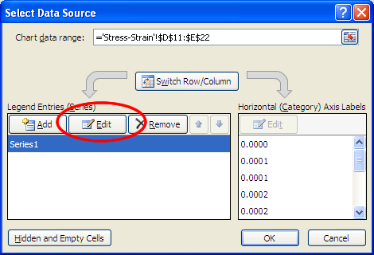
- In the empty box type 'all.' Click OK
- Click 'Add' to add another series. This series will duplicate 9 of the 12 data points in the 'all' series
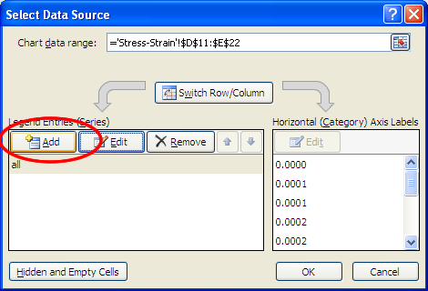
- Fill in the appropriate boxes to look like this:
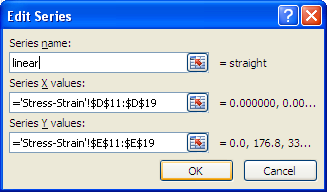
- Excel should add another data series of the same format (markers only) as the other but in a different colour.
- Select this new data series. When selected it should look like this:
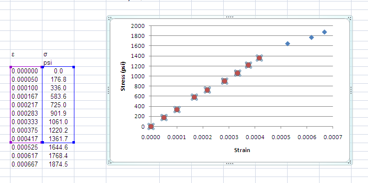
- Right click and choose 'Add Trendline'
- Choose 'Linear'; 'Set Intercept = 0', 'Display Equation on Chart' and 'Display R-squared value on chart'
- The equation shown reads y = 3E+06x which means y = 3x106x but I think it needs a few more sig figs than that. Right-click the equation and choose 'Format Trendline Label' and adjust the number of decimals shown on the scientific notation.
- Right-click the markers and choose 'Format Data Series'. This window allows us to edit line and marker style, colour and width. Under 'Marker Options' choose 'None'
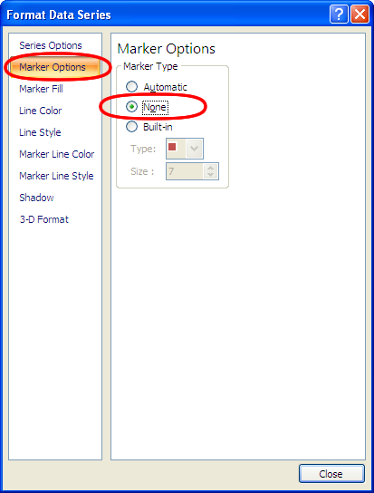
- Note that we now have a data series with no line or markers. Selecting it to modify these settings later could be difficult. However, as the equation is associated with this series we can right-click it and choose 'Format Data Series.' Without an equation there I do not recommend eliminating both the line and the marker on a data series.
- The final graph should look like this:
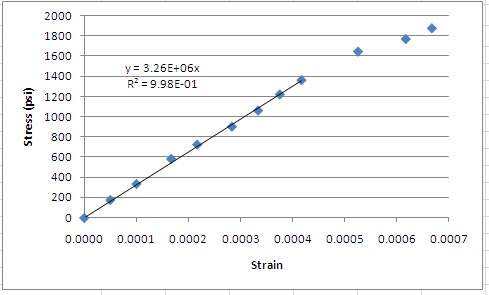
- If you are creating the graph as part of a lab report you can use Control+C and Control+V to paste the graph into Word. Excel and Word maintain a dynamic link between the two files so that any changes made to the graph in Excel will be automatically updated in Word. I am not totally sure how it does this and in what cases that link is broken so be careful.